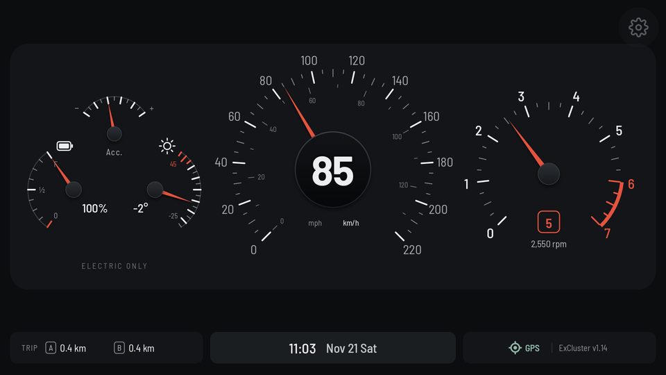
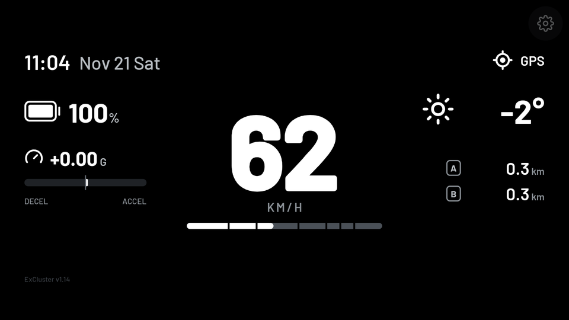

ExCluster
ExCluster turns a phone into a classic instrument cluster: GPS speed, a virtual RPM needle, trips, clock and gauges, with an
optional heads-up display mode. It is made for cars without a gauge cluster of their own.
스마트폰을 클래식 계기판처럼 쓰는 앱입니다. GPS 속도, 가상 RPM, 트립, 시계, 게이지와 HUD 모드를 제공합니다.

Retro theme · 레트로 테마

Modern theme · 모던 테마
Contact: wavullet@gmail.com